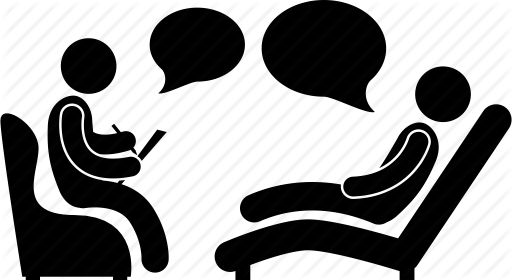
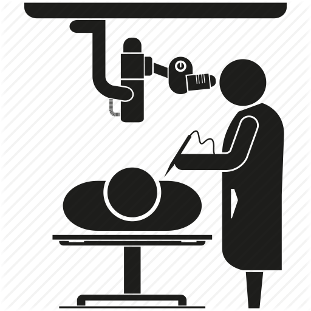

First Goal
Getting to know the patient the right way
Several different methods must be used to identify the patient in order to properly deal with him
 Read more
Read more
In this website we are going to know more informaiton about Global Goals Patient Safety
Read MorePatient safety is a healthcare specialty that has emerged in the context of the increasing complexity of healthcare systems and the resulting increase in patient harm in healthcare facilities.
The cornerstone of this specialization is continuous improvement based on learning from errors and adverse events. Patient safety is fundamental to providing high-quality essential health services
Moreover, in order to achieve the intended benefits of good quality health care , health services must be timely, equitable, integrated and effective.
Several different methods must be used to identify the patient in order to properly deal with him
Read more
Implementation of a mechanism for taking verbal or telephone orders and reporting the results of critical examinations, which require confirmation from a re-reading of all medical orders and test results by the person receiving the information
 Read morePrevention of error in penetrating procedures (that penetrate the skin) as well as surgeries in terms of the type of procedure, the target person and the location of the procedure
Read morePrevention of error in penetrating procedures (that penetrate the skin) as well as surgeries in terms of the type of procedure, the target person and the location of the procedure
 Read more